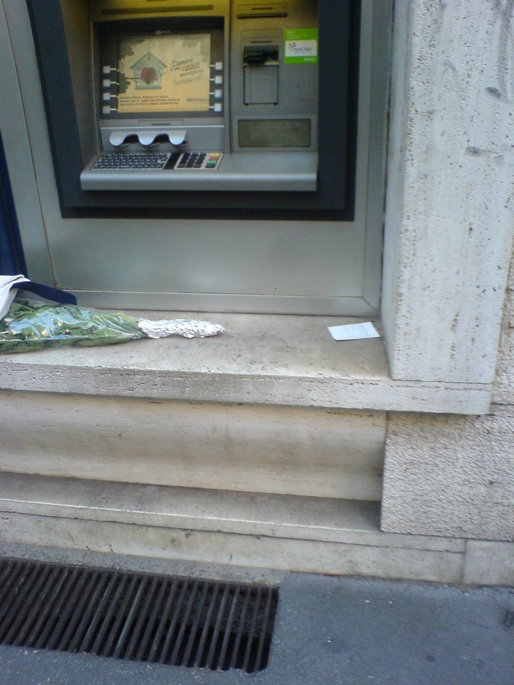

 Milan, Italy, July 2013. Image credit: RC.
There appears to be no agreed-upon standard for inserting a card in the slot at many machines, including ATM. Or, if there is one, it is clearly not universally known. The card is symmetric in shape but not in function: the magnetic band is on one side, and off center. Old 3’5” disks for the PC and many memory cards have notches or dents that render them asymmetric, so that the user can mediate between the card and the machine. The shape symmetry of credit cards creates a flurry of signs that are supposed to help the user insert them correctly. At times they are not exactly easy to process, with the result that the card is rejected, and another attempt is requested. Some cases are better than others. Here for instance the machine itself introduces a symmetry.
In other cases a verbal request (“band on the card should match band on the image”) facilitates the task – for those who master the language.
ATM machines are oftentimes conveniently located on the sides of buildings, right on the street. Bank architects do not seem to care much about some contingencies, such as the presence of a vent in the sidewalk. Once the card slips from your hands and falls in the vent, it’s gone.